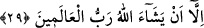
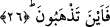

O, HERKES İÇİN
BİR ÖĞÜTTÜR
25. O lânetlenmiş şeytanın sözü de değildir.
26. Hal böyle iken nereye gidiyorsunuz?
27. O, herkes için bir öğüttür.
28. Sizden doğru yolda gitmek isteyenler için de (bir öğüttür).
29. Âlemlerin Rabbi Allah dilemedikçe siz dileyemezsiniz.
“O kovulmuş, lânetlenmiş şeytanın sözü de değildir.” Yani; Kur’an kulak hırsızlığı
yapan bazı şeytanların sözü değildir. Burada şeytan kelimesinden maksadın “kulak
hırsızlığı yapan şeytan” olduğunu “racîm” kelimesinden çıkarıyoruz. Çünkü “racîm”,
arkasından gök taşları fırlatılan şeytan demektir. Bu cümle, kâfirlerin Peygamber
Efendimiz hakkında “o kahindir ve büyücüdür” şeklindeki sözlerini reddetmek için
ifâde edilmiştir. Nitekim Allah bir başka âyet-i kerimede aynı konuyu şöyle vurguluyor:
“Onu (Kur’an’ı) şeytanlar indirmedi.” (Şuara 26/210)
Bu âyet-i kerimede gaybi mevâhibi ve sırri ilhamâtı haber veren kalb Muhammedinin
yalan ve iftira ile zanlı olmadığına ve onun sözünün bazı beşeri kuvvetlerin sözü
olmadığına işâret edilmektedir.
26. Hal böyle iken nereye gidiyorsunuz?
“(Ey insanlar) nereye gidiyorsunuz?” Bu cümle, insanların Kur’an hakkında
tuttukları yol itibariyle sapıklık içinde olduklarını vurgulayan bir ifâdedir. Âyetin
başındaki “fâ” harfi, kendisinden önce ile, kendisinden sonra yer alan cümleler arasında
öncelik ve sonralık olduğuna işâret etmektedir. “Fâ”dan önce Kur’an’ın apaçık bir
vahiy olduğu ve kâfirlerin iddiâ ettikleri şeylerden hiçbirinin aslı olmadığı
vurgulanmıştı.
Âyetin ifâdesi, dosdoğru yol ve istikamet belli olduktan sonra bunu terkeden ve ondan